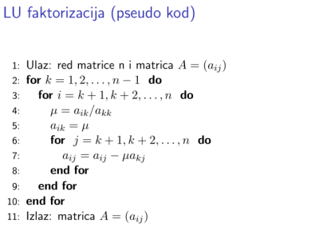
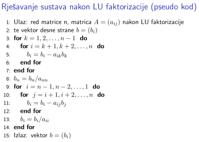

Gaussove eliminacije i LU rastav#
1. UVOD#
Pogledajmo sada linearan sustav
Iz Linearne agebre je poznato da ovaj sustav možemo zapisati u obliku \(Ax=b.\)
Nadalje, vidjet ćemo da matricu $\( A=\begin{bmatrix}5&1&4\\ 10& 4& 7\\ -15 &5& -9\end{bmatrix}\)$ možemo zapisati kao produkt dviju matrica odnosno u obliku:
Ovdje je matrica \(L\) donjetrokutasta matrica s jedinicama na dijagonali. Matrica \(U\) je gornjetrokutasta matrica. Do matrice \(U\) doći ćemo elementarnim transformacijama, odnosno množeći matricu \(A\) s lijeva pripadnom matricom transformacije.
from IPython.lib.display import YouTubeVideo
vid = YouTubeVideo("oxwgvJk_qFM")
display(vid)
Prilikom implementacije morat ćemo štedjeti memoriju računala. Pogledajmo kako efektivno možemo zapisati postupak dobivanja matrice \(L\) i matrice \(U\).
from IPython.lib.display import YouTubeVideo
vid = YouTubeVideo("u6PB-5gCMRQ")
display(vid)
Općenito \(LU\) faktorizaciju matrice \(A\) ćemo iskoristiti pri rješavanju sustava \(Ax=b.\)
Postupak Gaussove metode eliminacija na općenitom sustavu#
Definicija Kažemo da matrica \(A\in\mathbf{R}^{n\times n}\) ima \(LU\) faktorizaciju ako se može zapisati u obliku \(A=LU\) gdje je \(L\) donjetrokutasta matrica s jedinicama na dijagonali, a \(U\) gornjetrokutasta matrica
vid = YouTubeVideo("MXtjFOhhEN8")
display(vid)
Dakle, ukoliko nam je poznata LU faktorizacija, sustav Ax=b rješavamo na sljedeći način
Ly=b, dobijemo rješenje sustava y
Ux=y i dobijemo rješenje x koje je i rješenje polaznog sustava
Pseudokod (LU faktorizacija)#
Pogledajmo sada pseudokod rješavanja matrice, pri tome uočimo da ponovno koristimo matricu \(A\) kako bismo uštedili memoriju računala kao što je to prikazano “na papiru” u prethodnom videu u sklopu ovog predavanja. U donji trokut spremamo multiplikatore (odnosno brojeve \(\mu_k^{(i)}\)) i u u donjem trokutu u krajnjem zapisu imamo sve elemente koji su ispod dijagonale u matrici \(L\). U gornjem trokutu je zapisana matrica \(U\) 
U gornjem pseudokodu ćemo primjerice za \(n=5\) i \(k=3\) računati
\(i=4\), \(\mu=\frac{a_{43}}{a_{33}},\) te ćemo postaviti \(a_{43}=\mu\) (multiplikatore spremamo u donji trokut)
\(\quad j=4, \ a_{44}=a_{44}-\mu a_{34}\)
\(\quad j=5,\ a_{45}=a_{45}-\mu a_{35}\)
\(i=5, \mu=\frac{a_{53}}{a_{33}},\quad a_{53}=\mu.\)
Pseudokod (Rješavanje sustava)#

Uočimo da u gornjem algoritmu linije 3-7 rješavaju sustav \(Ly=b\) odnosno imamo supstitucije unaprijed. Kako bismo uštedjeli na memorijskom prostoru, rezultat ćemo pospremiti u vektor \(b\). Primjerice ako imamo sustav reda 5
tada je \(y_1=b_1\), no mi ćemo umjesto u novi vektor \(y\) podatke pospremiti u vektor \(b\) pa pišemo \(b_1=b_1\). Za drugu jednadžbu bismo imali \(y_2=b_2-a_{21}b_1\), (uočite da je u element \(a_{21}\) pospremljen multiplikator) pa pišemo \(b_2=b_2-a_{21}b_2\), \(b_3=b_3-a_{31}b_1\), \(b_4=b_4-a_{41}b_1\) itd.
Linije 8-14 rješavaju sustav \(Ux=y\) odnosno u našoj notaciji sada \(Ux=b\), te rezultat ponovno pospremamo u vektor \(b\). Primjerice da imamo sustav reda 5
imamo \(x_5=\frac{b_5}{a_{55}}\) ali implementiramo \(b_5=\frac{b_5}{a_{55}}\) itd.
Izlaz: Rješenje spremljeno u vektor \(b.\)
Složenost algoritma Gaussovih eliminacija#
Pokažimo da je složenost algoritma Gaussovih eliminacija \(O(\frac{2}{3}n^3)\)
Napomena i zadatak: U sljedećem videu na samom kraju vidjet ćete samo za ilusraciju implementaciju napisanu u Matlabu! Za vježbu za petak probajte razmisliti o navedenoj implementaciji u Pythonu, implementacija će biti objavljena unutar Jupyter bilježnice z apredavanja!
vid = YouTubeVideo("Dq40ZAJmGcI")
display(vid)
Prilikom prebrojavanja računskih operacija u algoritmu za računanje \(LU\) faktorizacije matrice vidjeli smo da moramo odraditi sljedeći broj operacija $\(\sum_{k=1}^{n-1}(n-k)(2(n-k)+1)\)$
U gornjoj sumi možemo uvesti indeks \(j=n-k\), te nam tada \(k=1\Rightarrow j=n-1 \) i \(k=n-1\Rightarrow j=1.\) Sada vrijedi
Sada koristimo znanje iz Matematičke analize 1 i dobivamo
U algoritmu za rješvanje sustava vidjeli smo da je ukupan broj računskih operacija bio jednak S_2+S_3 gdje je
Uzimajući \(l=n-i\) dobivamo:
Uočimo da je
Dakle, ukupan broj računskih operacija potrebam da odredimo rješenje sustava \(n\) jednadžbi sa \(n\) nepoznanica je